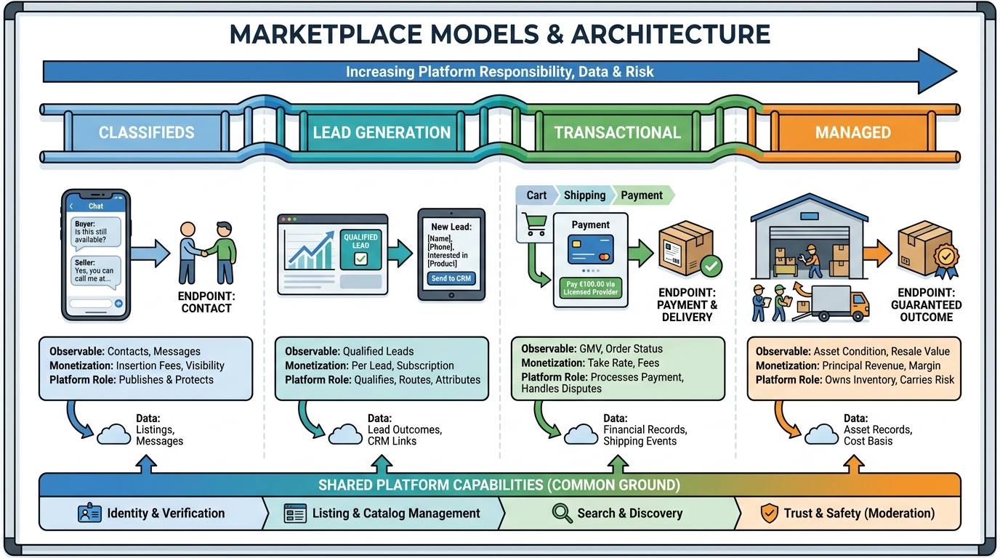

Part I — MARKETPLACE: The Business Behind the Listings
Classifieds, Leads, Transactions and Managed Models: A Marketplace Taxonomy

Image generated by Google Gemini (gemini-3-pro-image-preview)
Part I — MARKETPLACE: The Business Behind the Listings

Image generated by Google Gemini (gemini-3-pro-image-preview)